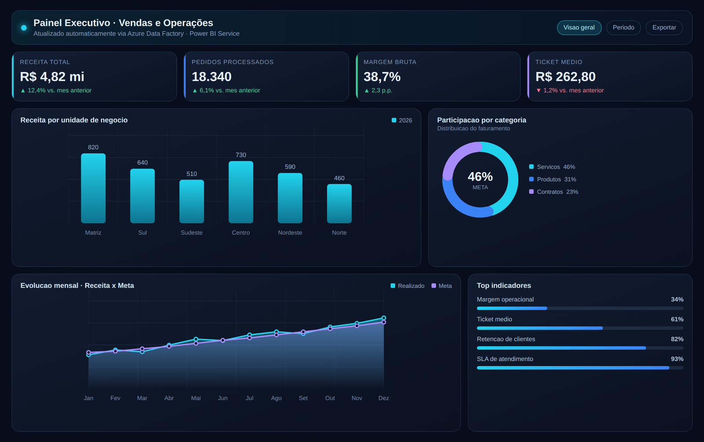
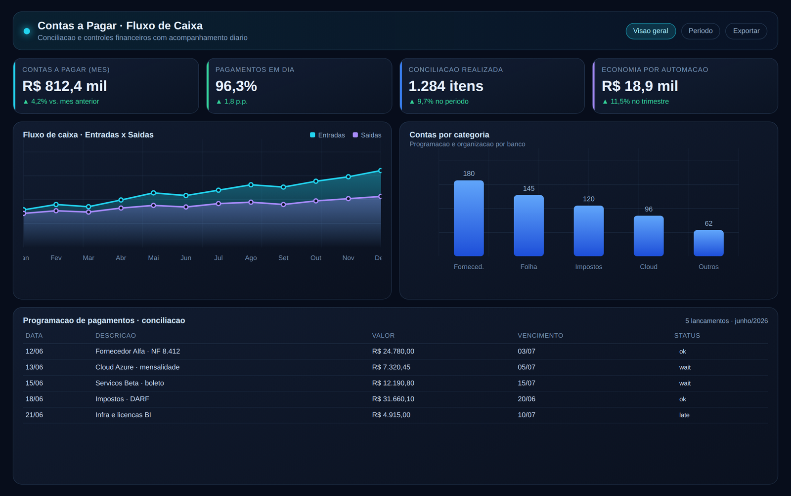
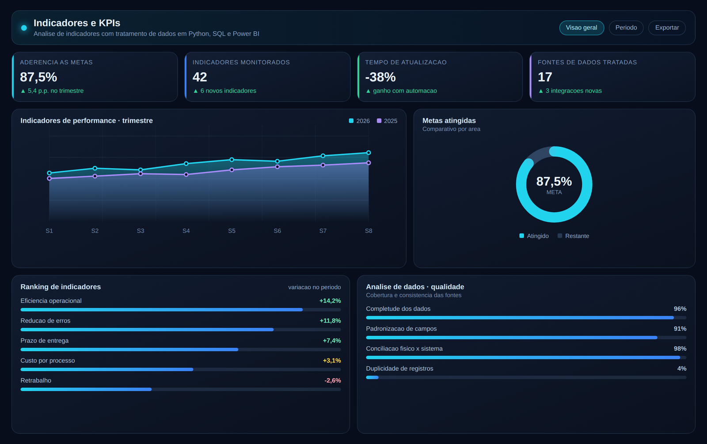

Visão de negócio
Vivência real em rotinas financeiras, administrativas e de contas a pagar — entendo o processo antes de automatizá-lo.
Dados•BI•Tecnologia•Financeiro
“Tecnologia e dados aplicados para transformar processos financeiros e administrativos.”
Uno a experiência técnica em engenharia e análise de dados à vivência prática em rotinas financeiras e administrativas — transformando dados em informação, automatizando processos e apoiando decisões mais eficientes.
Minha trajetória começou nas rotinas administrativas e financeiras: contas a pagar e a receber, conciliação bancária, controles, custódia de dados financeiros e relacionamento com fornecedores. Foram mais de dez anos em que aprendi, na prática, como os números entram e saem de uma empresa — e onde estão os gargalos que consomem tempo e geram erro.
Em 2022 fiz a transição para a área de tecnologia, atuando como trainee e engenheiro de dados, com desenvolvimento em Python, construção de pipelines em Azure Data Factory e Databricks e integração de dados em SQL Server e PostgreSQL. Depois passei a atuar com análise de dados e BI, criando dashboards, indicadores e automações para áreas de negócio.
Hoje, na área financeira, aplico tecnologia para automatizar processos, organizar informações e dar visibilidade aos indicadores do setor. O diferencial da minha trajetória é exatamente a combinação entre o técnico e o operacional: eu falo a linguagem do negócio e também construo a solução técnica que o resolve.
Vivência real em rotinas financeiras, administrativas e de contas a pagar — entendo o processo antes de automatizá-lo.
Python, SQL, Power BI, Azure Data Factory, Databricks e Power Automate aplicados em problemas concretos do dia a dia.
Menos retrabalho, mais controle e informação confiável para quem decide — dashboards e indicadores que acompanham a operação.
Da rotina administrativa e financeira às áreas de dados, BI e tecnologia — uma trajetória construída por etapas.
Aprendizado e prática em programação e engenharia de dados: Python, SQL, cloud e estruturação de repositórios de dados.
Desenvolvimento de pipelines com Azure Data Factory e Databricks, integração e tratamento de dados em SQL Server e PostgreSQL.
Coleta, tratamento e análise de dados de sistemas, planilhas e APIs; dashboards e indicadores em Power BI e automações com Excel, VBA e Python.
Contas a pagar e a receber, conciliação, controles financeiros, custódia de dados de fundos e gestão de estoque — a base de negócio que sustenta o trabalho com dados.
Seis frentes de atuação que unem dados, automação e controle financeiro.
Painéis em Power BI com visão consolidada de resultados, vencimentos, categorias e desempenho do setor.
Rotinas repetitivas transformadas em scripts e fluxos automatizados com Python, VBA e Power Automate.
Extração, tratamento e consolidação de dados para identificar padrões, desvios e oportunidades de melhoria.
Programação e acompanhamento de pagamentos por banco e categoria, conferência de boletos, notas fiscais e documentos.
Conciliação financeira, comparação físico x sistema e identificação de inconsistências nos dados.
Relatórios e análises gerenciais que dão suporte a decisões administrativas e financeiras mais rápidas e seguras.
Modelos ilustrativos do tipo de solução que desenvolvo — dashboards executivos, controles financeiros e acompanhamento de KPIs.

Painel executivo com KPIs de receita, pedidos e margem, evolução mensal comparada à meta e distribuição por unidade de negócio.

Controle de contas a pagar, fluxo de caixa de entradas e saídas, programação por banco e categoria e acompanhamento de status de pagamento.

Acompanhamento de metas, ranking de indicadores e painel de qualidade dos dados — completude, padronização e conciliação das fontes.
Stack de dados, BI, automação e bancos relacionais aplicada a projetos e rotinas corporativas.
Pandas, NumPy, Scikit-learn, Plotly, MySQL, MongoDB, Git/GitHub, Docker, Selenium, AWS e PHP.
Tecnólogo em Ciência de Dados (Universidade Estácio — 2024) · Ensino Médio Técnico em Administração · Python Avançado · Databricks · Bancos Relacionais · Desenvolvimento Web · PHP e MySQL · Excel · Oratória.
Estou aberto a oportunidades e projetos em que tecnologia e dados possam gerar resultado real nas áreas financeira e administrativa. Será um prazer conversar.